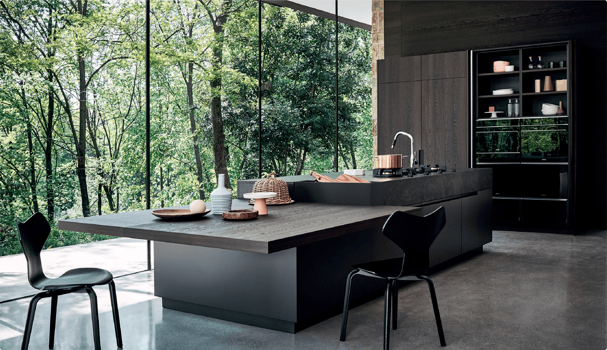
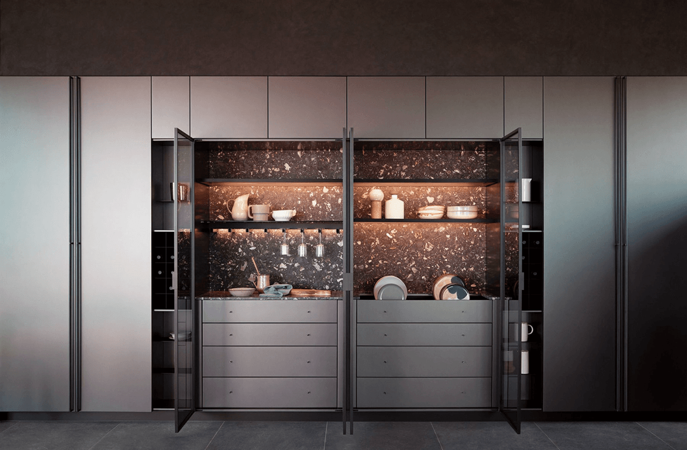
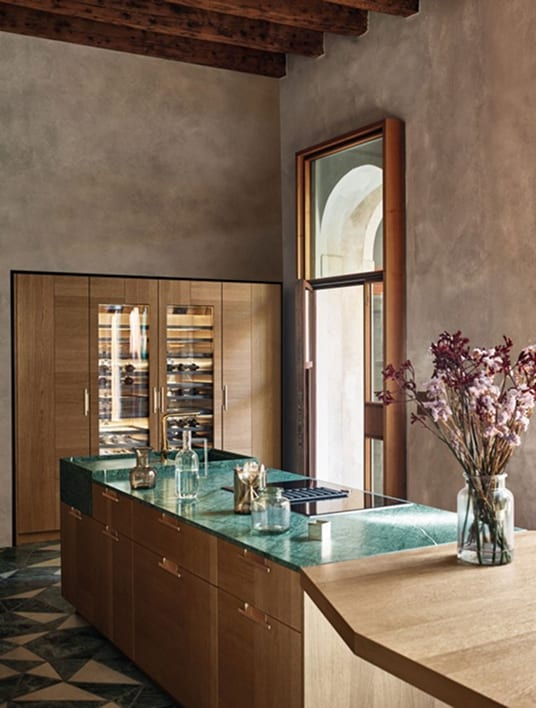
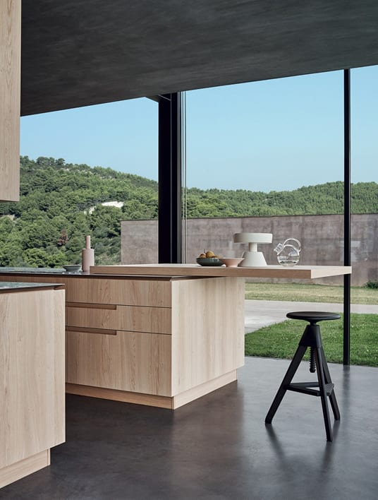
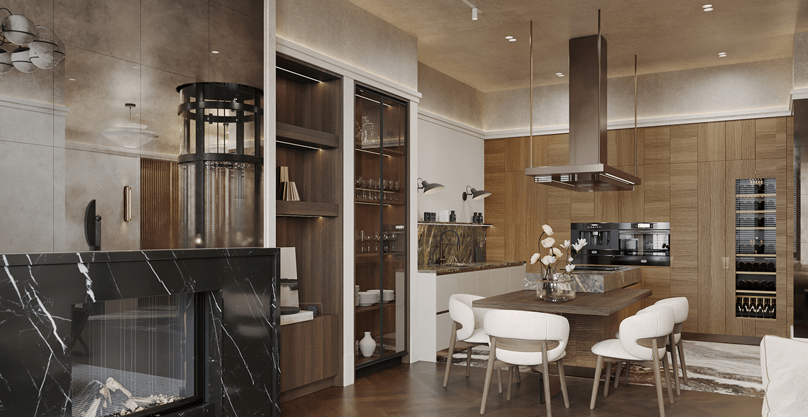
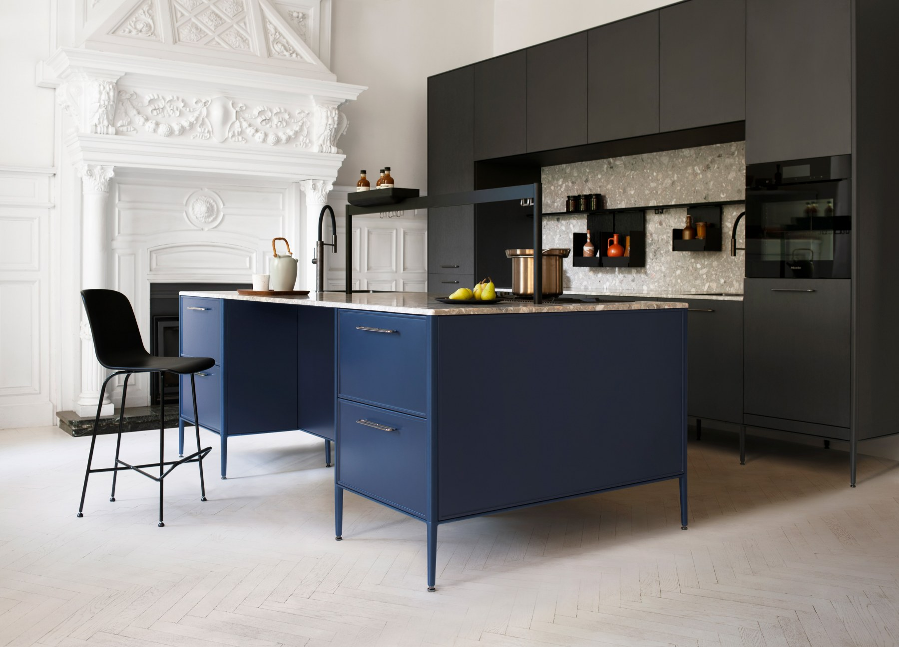
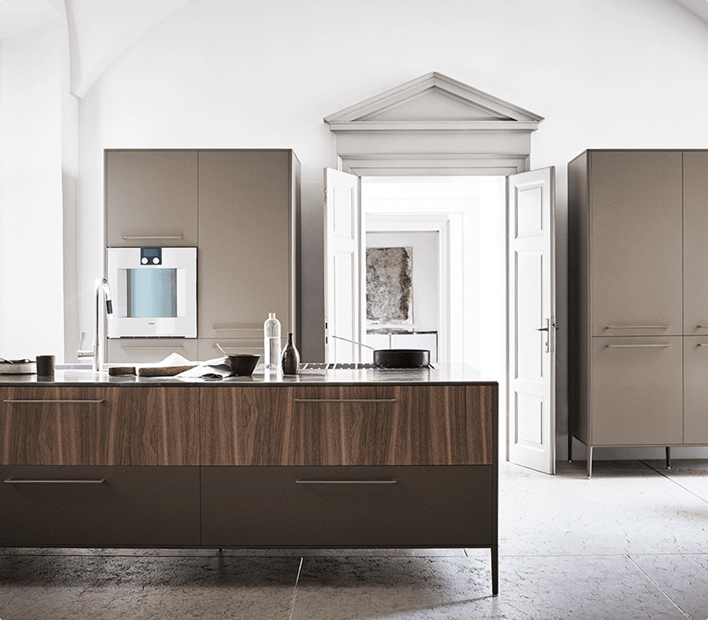

01

Анализ пространства
Смотрим планировку, инженерные точки и свет, обсуждаем сценарии использования кухни.
Cesar Studio в Москве
Мы работаем напрямую с производством в Италии и проектируем кухни как архитектурные системы, адаптированные под конкретное пространство.
Помогаем вписать кухни Cesar в архитектуру дома, учитывая планировку, свет и ваши сценарии жизни.

Мы рассматриваем кухню как часть архитектуры дома, а не отдельный гарнитур. Важны пропорции, ритм объёмов и свет.
Для основы мы используем системы Maxima 2.2, Intarsio, Unit и N_Elle, адаптируя их под конкретную планировку и образ жизни.



Two DA — это студия, где архитектурное мышление встречается с высочайшим качеством дизайна, а каждый проект создаётся как уникальная история жизни. С 2015 г. мы проектируем интерьеры и пространства, которые отражают стиль, характер и потребности наших клиентов. Наш подход сочетает современную элегантность и практическую функциональность. Нашим кредо является принцип: дизайн должен улучшать ежедневный опыт, повышая ценность инвестиций и вдохновляя на новый образ жизни.

Анализ пространства
Смотрим планировку, инженерные точки и свет, обсуждаем сценарии использования кухни.

Проект
Выбираем систему cesar, материалы и конфигурацию, готовим проект с визуализациями и чертежами.

Производство
Передаём заказ на фабрику cesar в италии, сопровождаем комплектацию и сроки.

Монтаж и сервис
Организуем доставку и монтаж, остаёмся на связи по настройке и изменениям.
Cesar Studio в Москве

Наш салон находится на улице Нижняя Сыромятническая, 11, строение 52. Здесь можно увидеть материалы, фурнитуру и обсудить планировку с консультантом.
Запишитесь на визит, чтобы разобрать план квартиры и подобрать конфигурацию кухни.
Под текстом — строка с адресом, телефоном, e-mail.